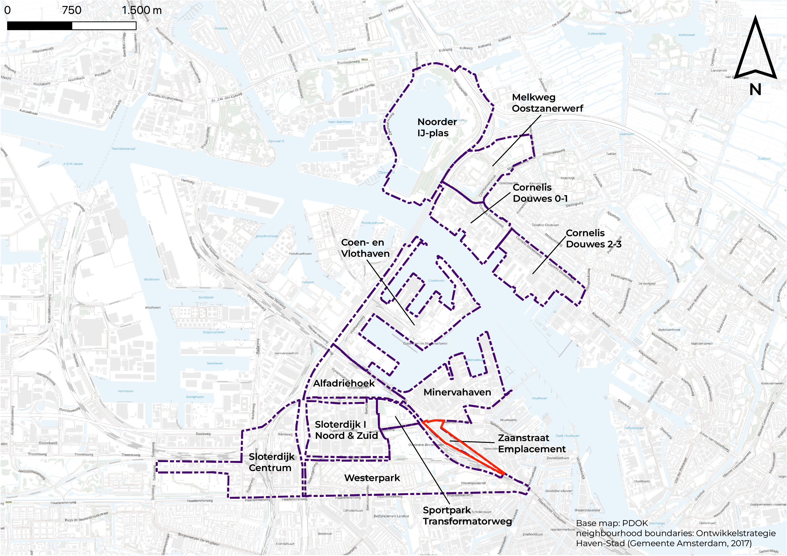

Car-free Zaanstraat Emplacement
Mobility strategy for a low-car neighborhood in Haven-Stad, Amsterdam
This project explores whether Zaanstraat Emplacement can become a truly car-free neighborhood while still being easy to reach, inclusive, and practical for everyday life. The site sits in Amsterdam's Haven-Stad transformation area, where many new homes and jobs are planned.
The goal was not only to remove private cars, but to design a complete mobility system that works for different people and different trip types. The study combines spatial analysis, policy review, and stakeholder insights to define what is needed for a successful car-free future.
Project Highlights
- Comprehensive evaluation of car-dependency risk and public transport potential for Zaanstraat.
- Read the mobility report (PDF)
Approach
- 1. Define clear evaluation criteria: connectivity, accessibility, and inclusivity.
- 2. Combine desk research, stakeholder interviews, and GIS accessibility analysis.
- 3. Measure car-dependency risk and compare public-transport scenarios.
- 4. Translate findings into design and governance interventions for implementation.
Key Findings
- Zaanstraat has strong potential for low car dependency because of its density, mixed use, and strategic location between Sloterdijk and Centraal.
- The rail corridor creates an important barrier, especially for walking connections across the area.
- A car-free model is feasible only when high-quality public transport and active-mobility networks are delivered together.
- Long-term success also depends on governance tools such as parking control, logistics rules, and resident onboarding.